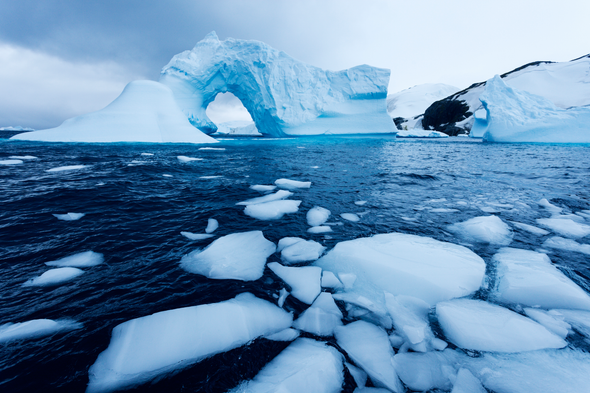
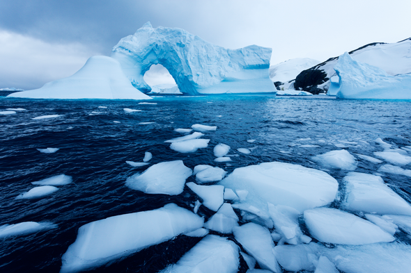

Existe un gran desconocimiento de lo que es el cambio climático en realidad, bien por exceso de información, inexactitud en las fuentes o por desinformación interesada, lo que da origen a una serie de falsos mitos sobre el cambio climático. En este espacio abordaremos desde un punto de vista objetivo y científico qué es el cambio climático, cuáles son sus causas, sus consecuencias y cómo se puede combatir. En definitiva, cómo nos afecta el cambio climático.
En primer lugar es necesario aclarar dos conceptos que, si bien están estrechamente relacionados, con frecuencia se toman de manera errónea como sinónimos: el cambio climático y el calentamiento global. Existe una importante diferencia, y es que el calentamiento global es la causa del cambio climático, es decir, el aumento de la temperatura del planeta provocado por las emisiones a la atmósfera de gases de efecto invernadero derivadas de la actividad del ser humano, están provocando variaciones en el clima que de manera natural no se producirían.
La Tierra ya se ha calentado y enfriado en otras ocasiones de forma natural, pero lo cierto es, que estos ciclos siempre habían sido mucho más lentos, necesitando millones de años, mientras que ahora y como consecuencia de la actividad humana, estamos alcanzando niveles que en otras épocas trajeron consigo extinciones en apenas doscientos años.
Antes de profundizar en el detalle de sus causas y consecuencias, te vamos a contar por qué no te importa el cambio climático…
El cambio climático constituye la mayor amenaza medioambiental a la que se enfrenta la humanidad.

1,5
grados
Cerca de 200 países acordaron fijar en 1,5 ºC el umbral máximo de aumento de la temperatura del planeta.
0
emisiones
Debemos reducir a cero las emisiones netas de gases de efecto invernadero para 2040 en toda la UE si no queremos vivir los peores efectos del cambio climático.
81%
Según el Instituto Elcano, el 81% de la ciudadanía piensa que España no hace lo suficiente para luchar contra el cambio climático.
El problema
El cambio climático es el mal de nuestro tiempo y sus consecuencias pueden ser devastadoras si no reducimos drásticamente la dependencia de los combustibles fósiles y las emisiones de gases de efecto invernadero. De hecho, los impactos del cambio climático ya son perceptibles y quedan puestos en evidencia por datos como:
- La temperatura media mundial ha aumentado ya 1,1°C desde la época preindustrial.
- El período 2015-2019, según la Organización Meteorológica Mundial (OMM), será probablemente el quinquenio más cálido jamás registrado.
- La tasa de subida del nivel del mar ha ascendido a 5 mm al año en el quinquenio 2014 -2019.
Pero hoy también estamos viendo los impactos económicos y sociales, que serán cada vez más graves, como:
- Daños en las cosechas y en la producción alimentaria
- Las sequías
- Los riesgos en la salud
- Los fenómenos meteorológicos extremos, como danas, tormentas y huracanes
- Mega-incendios
En los peores escenarios probables que los expertos reflejan, el aumento de temperatura podría llegar a los 4,8 ºC para final de siglo. El cambio climático es un problema global que alcanza una perspectiva ambiental, política, económica y social en la que las peores previsiones también implican enormes pérdidas económicas. Y es que cuanto más tardemos en actuar, mucho más elevadas serán las inversiones para la adaptación al aumento de la temperatura.
El 79% de las emisiones de gases de efecto invernadero en la Unión Europea son debidas a la quema de combustibles para usos energéticos o de transporte, según datos de Eurostat.
Todavía en 2017, el 91% de la energía usada en España provenía de fuentes no renovables como combustibles fósiles o energía nuclear. De hecho España, junto con otros cinco países de la Unión Europea, acumulan alrededor del 70% de todos los gases de efecto invernadero del continente.
La solución
El sector energético, debido a su uso de energías sucias —petróleo, carbón y gas—, es uno de los mayores contribuidores al calentamiento global. Unas 90 empresas son responsables de casi las dos terceras partes de las emisiones mundiales. En España, las grandes eléctricas —Endesa, Iberdrola, Naturgy, EDP y Viesgo— siguen generando buena parte de su electricidad usando fuentes no renovables, por eso trabajamos para que este modelo insostenible cambie y se acelere la transición a un sistema energético eficiente, inteligente, 100% renovable y democrático.
La revolución energética en manos de la ciudadanía es el camino: con las energías renovables se conseguirán paliar los efectos del cambio climático y lograr una eficiencia energética que generará puestos de trabajo y reducirá los costes de electricidad. Necesitamos prescindir de los combustibles contaminantes y de la energía nuclear y aumentar la participación de la ciudadanía para que se beneficie de la transición renovable.
«El cambio climático es una realidad que ya va a tener implicaciones inevitables, pero aún podemos minimizar sus consecuencias más severas»
 
